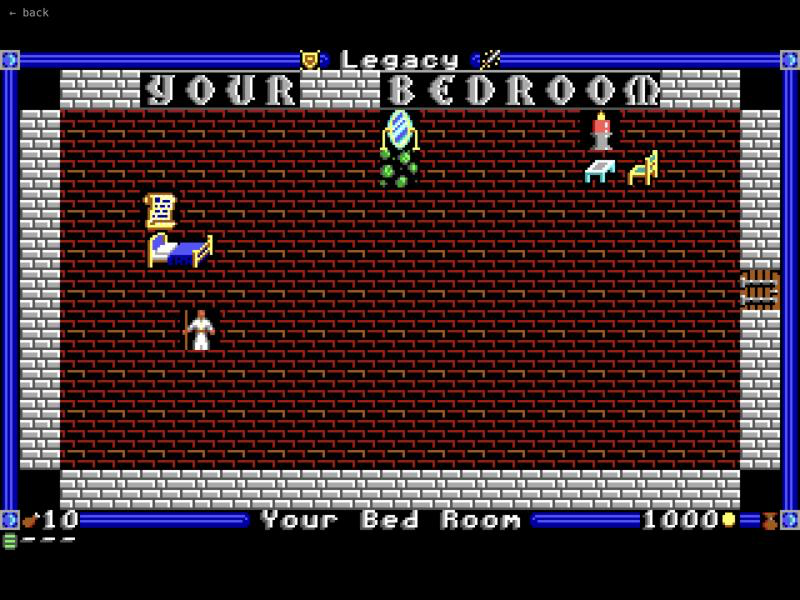
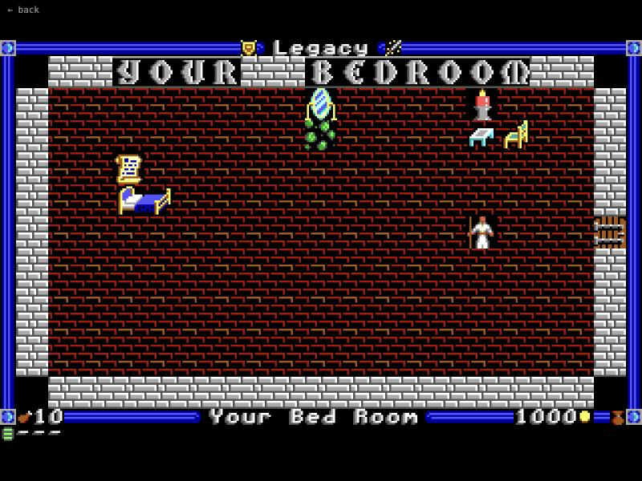

Legacy
Legacy is my attempt to fit the things I love about old CRPGs into something you can play in a short session. I wrote it in Go with Ebitengine, drew tiny EGA-style tiles and built the maps in LDtk.
The setup: an entity called the Architect made an isolated world and filled it with people taken from other worlds and eras. Most of them have lost their memories, but you still have yours. Four factions compete for control: the Literates, who turn written words into magic; the Brotherhood of Fists; the merchant followers of Tauci; and the Lightbringers, who think the world is a prison.
You can talk your way through problems, recruit followers, read Rogue-style scrolls, drink potions and dive into procedurally generated dungeons. It is still a rough prototype, but it is full of odd little systems like wells, clocks, shops and mirrors.
Screenshots



Latest updates
- 2026-09-14 Recfile switched to public version
- 2026-08-04 Never offer keys for sale
- 2026-06-11 Fixed nil-pointer panics in scroll stacking
- 2024-08-12 Dependency updates
- 2023-12-12 Proof of concept for the Dungeon of Doom
- 2023-10-24 First commit